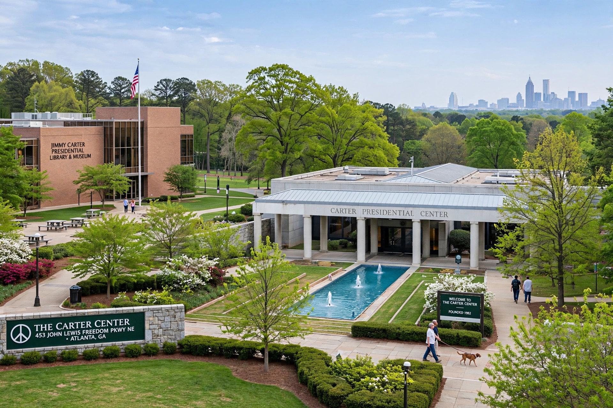

| Founded | 1982 |
|---|---|
| Founders | Jimmy Carter and Rosalynn Carter |
| Headquarters | Atlanta, Georgia, United States |
| Type | Nonprofit NGO |
The Carter Center is a not-for-profit, non-governmental organization founded in 1982 by former U.S. President Jimmy Carter and his wife, Rosalynn Carter. In partnership with Emory University, it works to advance human rights, alleviate suffering, promote democracy and improve global health, guided by the principle of waging peace, fighting disease and building hope.

The Center is renowned for observing elections in dozens of countries, mediating conflicts, and advancing democratic standards. Jimmy Carter's mediation work through the Center included missions concerning North Korea, Haiti, Sudan and the Middle East.
Its health work led the international campaign to eradicate Guinea worm disease (dracunculiasis), reducing cases from an estimated 3.5 million in 1986 to a handful annually, and combats river blindness, trachoma, lymphatic filariasis, malaria and neglected tropical diseases, alongside mental-health initiatives championed by Rosalynn Carter.
Jimmy Carter's work through the Center was cited in his 2002 Nobel Peace Prize.